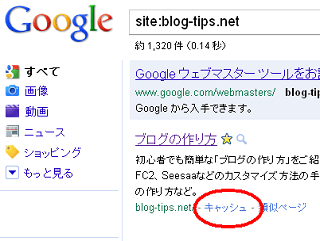

検索エンジンへのサイト登録
検索エンジンへ自分のサイトを登録をしておくと、グーグルやヤフーの検索エンジンが定期的に巡回してくれるようになります。
このサイト登録の申し込みをしなかったとしても、ほかのサイトやブログサービスからリンクされていれば、いずれはクロールされてインデックスされますが、一応、登録申請しておくことをおすすめします。
検索エンジンへのインデックスとは？
検索エンジンの「インデックス」とかサイト登録の実際の意味は、ヤフーやグーグルがＨＴＭＬのコピーを作るということです。
自分のブログの記事をヤフーやグーグル、ＭＳＮがそれぞれコピーをして、集めて回っている感じになります。
そのコピーは検索結果の「キャッシュ」というタブを押せばみることができます。

検索サイトであるヤフーやグーグル、ＭＳＮは、何かを検索されたとき、それら大量にあるコピーのなかから、おすすめのページを順番をつけて推薦してくれるという感じです。
けれども、そもそもインデックスされていなかったら、検索結果に表示されようもないのです。
自分のサイトが登録されているかどうかを調べるには、上の画像のように、グーグルやヤフーで次のように検索するとわかります。
site:サイトのURL
検索結果に何も表示されなかったら、クローラーがやってきていないということなので、サイト登録をして定期的に巡回してもらいましょう。
主な検索エンジンの登録先
たまに自分のブログの記事をまちがって削除してしまうこともありますが、ヤフーやグーグルにコピーが残っていると復活できるケースもあります。
一番はやいのは、クローラーが頻繁にやって来る自分のブログやホームページからリンクを貼ることですが、できたてのサイトへリンクを貼るのはＳＥＯ対策上は避けた方よいです。
ちなみに、検索エンジンのロボットはスパイダーともいわれていますが、これはスパイダーマンのスパイダーで「くも」という意味です。
インターネット上に張りめぐられたリンクの網をくもの巣に例え、その網の目を巡回するイメージでスパイダーと呼ばれています。
インターネットの www. も、ワールド・ワイド・ウェブというふうにいわれていますが、この「ウェブ」の意味はくもの巣という意味です。
検索エンジンは、このリンクの網の目をたどってクロールし、ページをインデックスしていきます。
ですので、他のサイトからリンクされていれば、いずれは自分のサイトも巡回してくれますが、サイト登録の申請をしておいた方が確実なのです。
戻る - ブログ開設後のサイト登録やブログ設定
- 検索サイト、グーグルとヤフー
まず、無料ブログを作るのにするべきことといえば検索サイト(グーグルやヤフーなど）の利用の仕方を覚えることです。検索サイトを利用するとブログ作成の際にわからないことがあったときなどにとても役に立つと思い... - 百度のサイト登録
百度のサイト登録もグーグルやヤフー、ギガブラストなどのついでにやっておくといいと思います。百度というのは中国の検索エンジンのことですが、本格的にサービスを開始したようです。以前、検索サイト登録のところ...